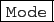

suivant: Exécution pas à pas
monter: L'interface Xcas de giac
précédent: Les boutons de l'éditeur
Table des matières
Index
L'écran DispG et l'instruction ClrGraph pour effacer
On obtient cet écran avec le menu :
Cfg
 Montrer
DispG
Montrer
DispG
L'écran DispG enregistre toutes les commandes graphiques
depuis le début de la session, sans distinction de niveau. Il
permet en particulier de visualiser les affichages graphiques
intermédiaires d'un programme (en effet seuls les objets graphiques
renvoyés par return peuvent être affichés en
réponse dans un niveau où on exécute un programme).
Par exemple, si vous avez fait un programme réalisant un dessin
récursif, vous pouvez voir votre dessin sur l'écran DispG.
L'écran DispG peut aussi être utilisé par la commande
interactive_odeplot pour cliquer des courbes intégrales à visualiser
sur fond de champ de vecteur (mais c'est plus simple d'utiliser dans un niveau
de géométrie, le mode plotode qui se trouve dans le sous menu
Courbes du bouton menu
.
La commande ClrGraph() permet
d'effacer l'écran DispG.
Documentation de giac écrite par Renée De Graeve